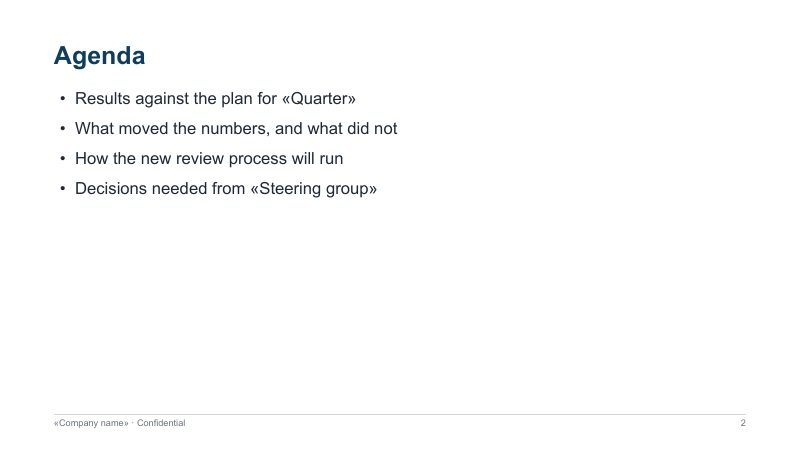
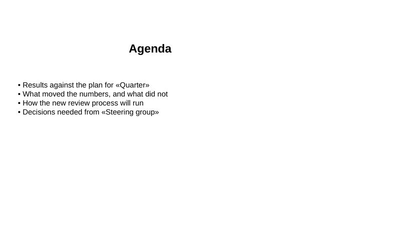
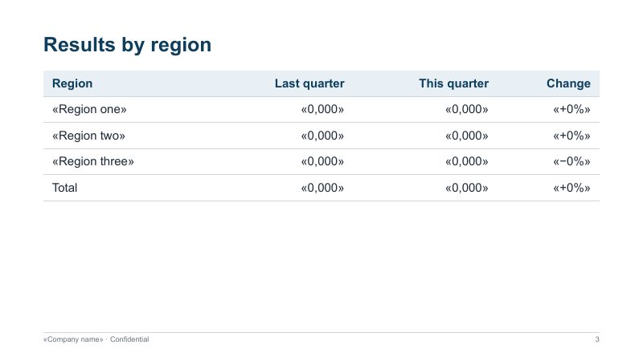
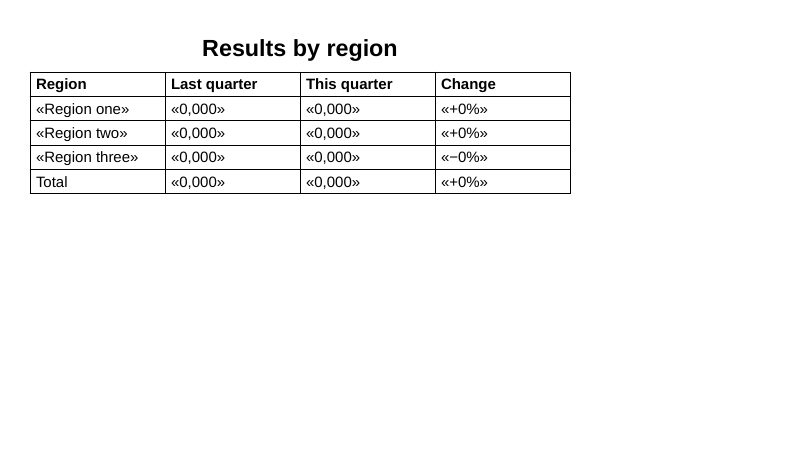
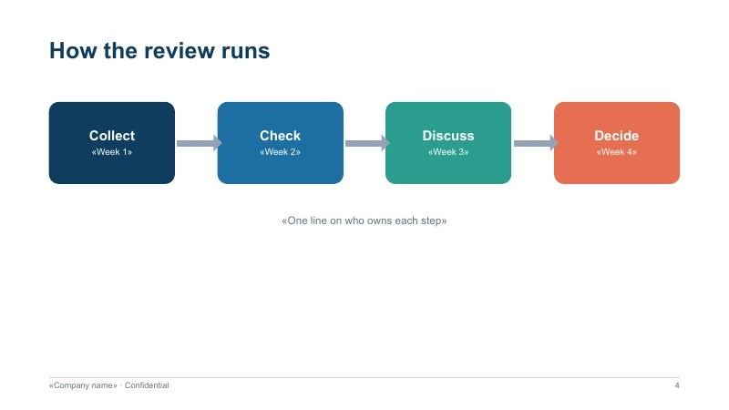
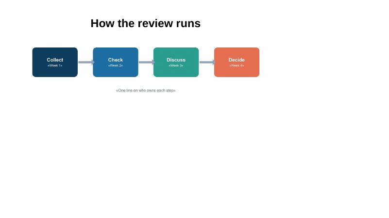

Switch templates with one flag
AILANG Parse reads the PDF once; the look is just the --reference-doc deck you pass. Here is the same slide — recovered from one PDF — in four looks. Nothing else in the command changes.
Click a slide to open the whole deck next to the source PDF, just below.
no template filemidnight-reference.pptx downloadpaper-reference.pptx downloadbold-reference.pptx downloadAny .pptx works as a template: your company deck, last quarter’s review. AILANG Parse takes its theme colours and fonts, its slide master (background and decoration) and its text styles. The Midnight, Paper and Bold references above are small files you can download and open in PowerPoint.
Live example
A five-slide PDF deck on the left, the PowerPoint generated from it on the right. Pick a template to restyle it.
The deck is shown rendered by LibreOffice, since browsers can’t display .pptx. No inline PDFs in your browser? The slides below are the same pages.
Slide by slide
Each PDF page becomes one slide. Text slides are rebuilt as editable title, bullets and tables; a slide drawn with shapes is kept as a picture, so nothing in the drawing is lost.






The recovered structure
What the read produced, slide by slide — loaded from the actual parse output of the PDF above. Every deck on this page was generated from exactly these blocks.
What we recover
Reading a PDF is the lossy step: it keeps where each glyph is drawn, not what it was. PDF to Word explains the read in detail; for slides it does this:
| In the deck | How it is read back from the PDF |
|---|---|
| Slides | One slide per PDF page. A page with more than fits continues on a second slide, its title marked “(cont.)”, so nothing runs off the bottom. |
| Titles | The largest text at the top of the page. |
| Bullets and numbered lists | Bullet and number markers, wrapped lines kept with their item. Symbol-font arrows and bullets come back as the characters they show. |
| Tables | Rows whose cells snap to shared columns become a PowerPoint table; a wide table that would not fit is set in smaller type. |
| Diagrams | A page that is mostly drawing with short labels — measured from the page itself — becomes a picture of the page below its title, with the labels in the speaker notes. |
| Running footer and slide numbers | Recognised and left out of the slides; your template’s master supplies its own. |
| Pictures | Photos and illustrations on a slide are carried in place. |
What a PDF can’t give back
- Editable shapes. Boxes, arrows and charts drawn in the original are vector paths in the PDF. They come back as a picture, not as shapes you can move.
- Animations, transitions and the original speaker notes. None of these reach a PDF.
- Layouts and placeholders. Text comes back as text boxes in a standard title-and-body arrangement, not in the original layout’s placeholders.
- Exact positions. Slides are rebuilt, not traced: a two-column slide comes back as one column.
When you still have the original .pptx, parse that instead — it keeps notes, layouts and shapes. This page is for when the PDF is all you have.
Choosing a backend
Converting a PDF to slides reads it with poppler’s slide mode unless you choose otherwise — it knows where pages start, which one-slide-per-page needs, and it spots diagram pages. The other backends work too, and everything after the read is the same.
| Backend | Use it for | Needs |
|---|---|---|
| (default) | Decks exported from PowerPoint, Keynote, Google Slides or a browser. One slide per page, diagrams as pictures. | poppler only |
docling | Scanned decks (OCR). | local Python package |
pdftotext | Text only: it keeps no page boundaries, so slides are filled by length rather than one per page. | poppler only |
ai | Handwritten or visually complex pages. Opt-in, never automatic. | an AI provider key |
Run it
# PDF deck to PowerPoint, in your own template
docparse deck.pdf --convert deck.pptx --reference-doc house-style.pptx
# Plain slides, no template
docparse deck.pdf --convert deck.pptx
# LibreOffice Impress instead
docparse deck.pdf --convert deck.odp
# A scanned deck: read with OCR
docparse scan.pdf --pdf-backend docling --convert deck.pptxConverting a document rather than a deck? PDF to Word does the same in your Word template. Install the CLI from the docs.
Frequently Asked Questions
Can I convert a PDF back into an editable PowerPoint?
Yes. Each PDF page becomes a slide with an editable title, bullets and tables, styled by the .pptx template you choose. Diagram slides become a picture of the page, with their text in the speaker notes.
Why do some slides come back as pictures?
A PDF keeps shapes as vector drawing, so a reader only sees their labels. Rebuilding such a slide as bullets would lose the drawing, so it is kept as a picture and its labels go into the speaker notes, where they stay searchable and editable.
Do I need a PowerPoint template?
No. Without one you get plain, editable slides. With --reference-doc deck.pptx, the theme colours, fonts, background and master decoration come from your own deck.
Does it keep animations or speaker notes from the original deck?
No — a PDF has neither. If you have the original .pptx, parse that instead.
Is my PDF uploaded anywhere?
Not with the CLI: parsing and slide generation run on your machine with poppler. Only --pdf-backend ai sends pages to an AI provider, and it is never chosen automatically.